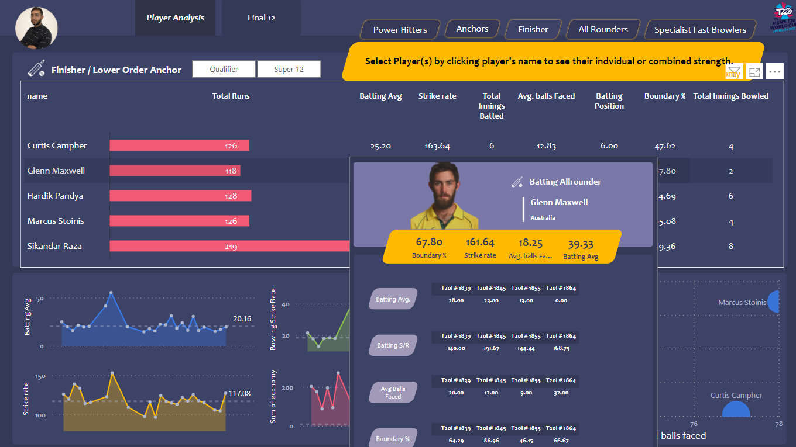
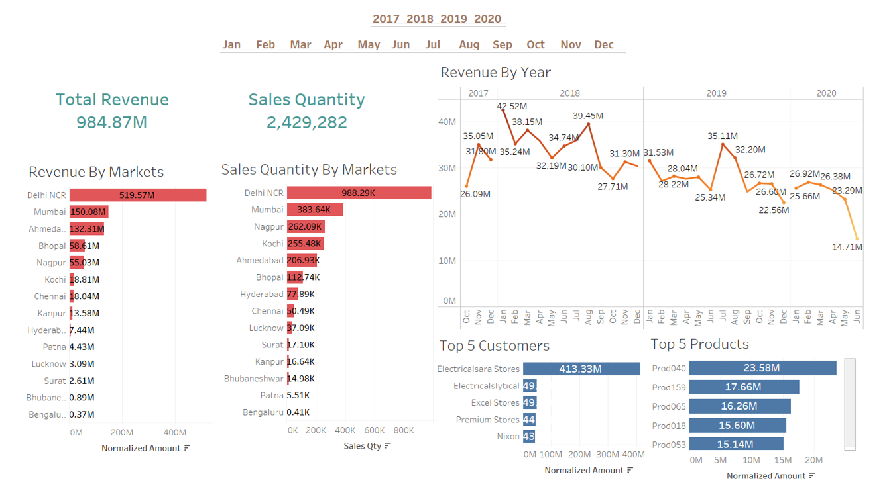
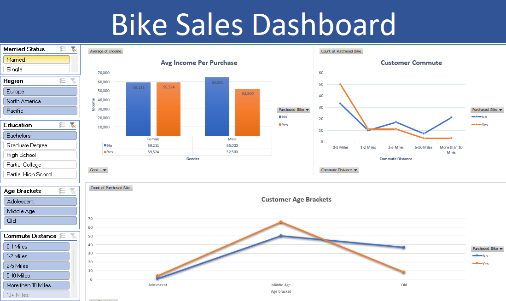

Le But de ce Projet est de créer un tableau de bord interactif et informatif en utilisant PowerBI pour l'analyse des données liées au cricket. Il a inclus des étapes de collecte, de nettoyage, d'analyse et de visualisation des données.

Ce projet visait à collecter, analyser et visualiser des données en utilisant SQL et Tableau. Il impliquait la collecte de données, l'exploration SQL, le processus ETL,
et la création de deux tableaux de bord interactifs pour fournir des informations exploitables aux parties prenantes.

Le but de ce projet était d'améliorer et de visualiser les données de ventes dans Excel, en effectuant des opérations
telles que le nettoyage des données, l'ajout de nouvelles colonnes, l'utilisation de tableaux croisés dynamiques,
l'intégration de graphiques et la création d'un tableau de bord interactif. Ces étapes ont permis de faciliter l'exploration
et l'analyse conviviales des données de vente.